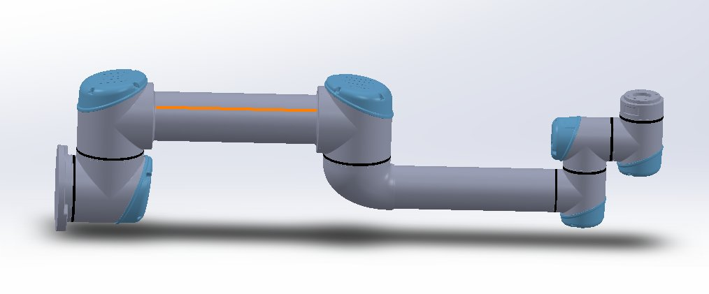
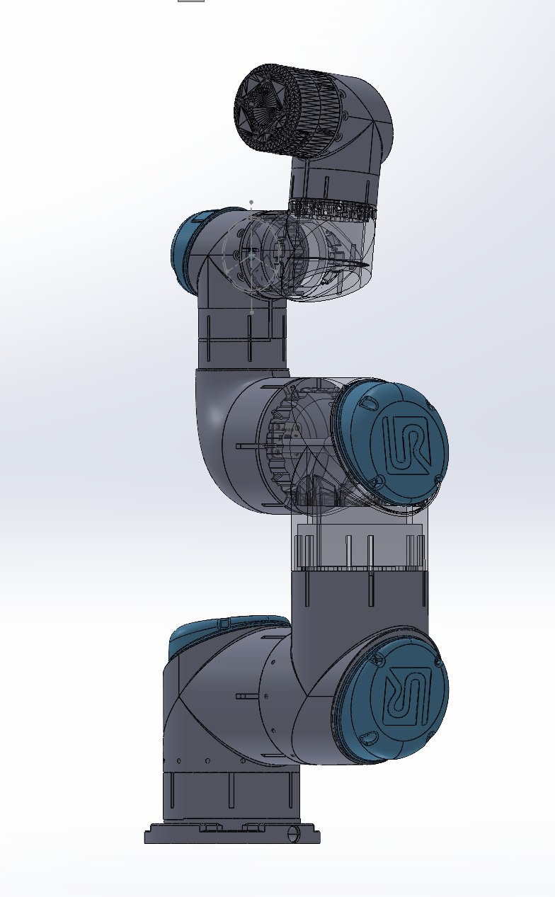
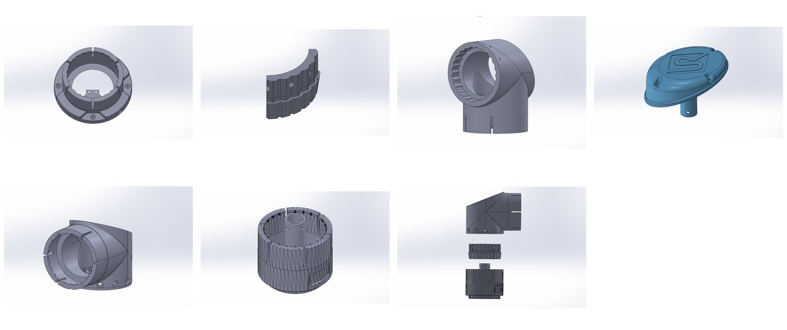
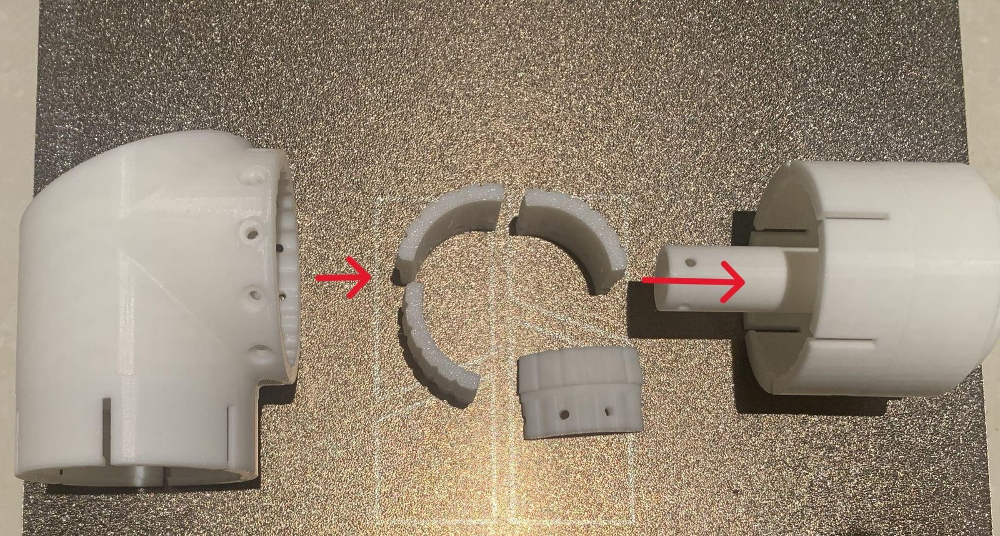
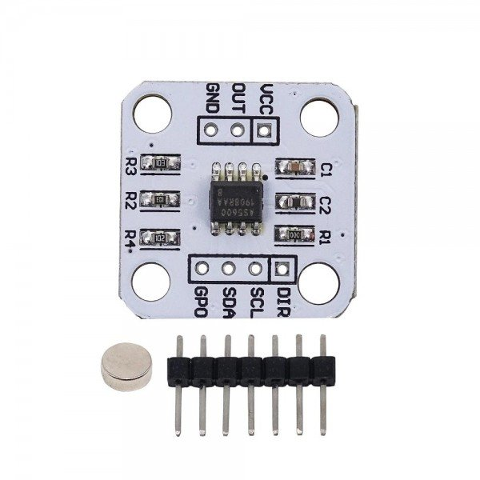
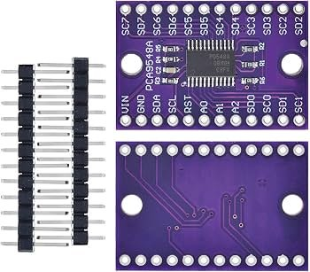

Master UR5 Arm — Controlling a Real UR5 over Wi-Fi
Description
A 60%-scale, 3D-printed UR5 "teaching model" built by a team of 4 for the unit AUTO4507 Robot Manipulators and Automation at the University of Western Australia. Every joint of the scaled model contains a magnetic encoder, so when you move the model by hand, a TTGO ESP32 reads all six joint angles and streams them over Wi-Fi to a real UR5 industrial robot — which mirrors the model's motion in real time. The device also records motion sequences that the UR5 can replay with joint (MoveJ) or linear (MoveL) moves.
The Challenge:
- 6-DoF input device: Build a scaled model of a UR5 from 3D-printed parts, with a sensor on every axis.
- On-device UI: Display joint angles, calculate the gripper TCP position via forward kinematics, and visualise the robot configuration graphically on the TTGO's TFT screen.
- Real-time following: Link the TTGO to the UR5's router via Wi-Fi so the real robot copies the model's movements live.
- Record & playback: Record model poses and replay them on the real UR5 using joint or linear moves, selectable from the UI.
- Budget: Maximum $40 for the whole build.
Robot Showcase:
CAD Design:
Instead of modelling the arm from scratch, the official UR5 STEP file from Universal Robots was scaled down to 60%, then hollowed out in SolidWorks to make room for the electronics. The joint mechanisms were drawn and extruded directly on top of the UR5-shaped solid — saving design time while keeping the model looking as close as possible to the real UR5.


The design brief for the joints: modular and repeatable, easy to 3D print with minimal supports, and easy to assemble with friction/press fits wherever possible. The joints slot into each other using connector pieces with designated grooves that allow discrete rotation, while 3D-printed mounts hold a diametric magnet exactly above each encoder chip so it rotates with the joint.


Electronics:
Each joint is sensed by an AS5600 12-bit contactless magnetic encoder (4096 positions per revolution — a theoretical resolution of 0.088°). Unlike potentiometers, the magnetic encoders are frictionless and far less prone to noisy readings. Six encoders means twelve I2C lines, so a PCA9548A I2C multiplexer gives each encoder its own channel, letting the ESP32 scan all six joints sequentially over a single I2C bus.


The multiplexer sits under the base of the arm with the SCL/SDA channel wires running up through the hollow arm to each encoder. The whole system is powered from a single USB-C cable into the TTGO, and the finished model anchors to the table with suction cups.
Software — Reading the Model:
The firmware converts raw encoder readings into joint coordinates with full validation: one retry per six-joint scan on I2C faults, 0°/360° wrap-around handling, and a jump filter that rejects changes above 30° as probable read errors (holding the last valid value instead). Reference positions and waypoints are only ever captured from fresh, valid readings. The same validated joint angles feed every function — Sensors display, Follow, Sequence and the 3D visualisation — so all modes stay consistent.
Here, θ is the encoder angle, θref is its reference, and s is the sensor mounting direction. Wrapping the difference handles the encoder's 0°/360° boundary.
Software — Real-Time Following:
The ESP32 connects to the UR5 over Wi-Fi, sending URScript programs and receiving robot-state feedback (joint positions, speeds, TCP pose and tool offset). In Follow mode, joint targets stream through a reverse TCP connection on port 50001 every ~20 ms, while a URScript servo loop on the robot runs every 8 ms. Each update is velocity-clipped, with a 0.5° deadband to suppress encoder jitter and robot-side limits of ~22.9°/s and 57.3°/s². Following only starts from valid data with the robot stationary, begins at the robot's actual pose and converges smoothly to the model — and it automatically stops on stale feedback, joint-limit violations, or a command-to-actual error above 30°, with automatic reconnection once conditions are safe again.
Click a software or interface image to view it full size.
Software — FK, 3D Visualisation & Sequences:
Nominal UR5 forward kinematics computes the model's TCP position in millimetres relative to the robot base, displayed side-by-side with the real UR5's actual TCP for comparison. A 3D render of the UR5 is drawn into a sprite buffer and pushed to the TFT each frame, animating the model's configuration live.
The joint angles determine the flange position pflange and rotation Rflange; ptool is the active tool offset from the flange to the TCP.
The Sequence function stores up to 32 poses in non-volatile memory (six joint angles + tool offset each). Playback generates a URScript program on the fly: MoveJ uses the stored joint angles directly, while MoveL computes target TCP poses from the recorded angles and tool offset. The robot settles and verifies each waypoint (<0.01 rad joint error for MoveJ; <2 mm / 0.01 rad for MoveL) before advancing, with progress and heartbeat messages exchanged over reverse TCP port 50002.
User Interface:
The control panel is a joystick for menu navigation plus two buttons: Button 1 toggles the UR5's gripper open/closed and Button 2 establishes the Wi-Fi link to the robot. The main menu gives access to all six functions: Sensors, FK/TCP, Follow, UR5 Joints, 3D Model and Sequence.
Results:
- Real-time following: the real UR5 smoothly mirrors the hand-moved model over Wi-Fi.
- Full feature set delivered: joint display, FK/TCP, on-screen 3D visualisation, gripper control, and record & playback with selectable joint/linear moves.
- Robust by design: encoder validation, velocity clipping, watchdog timeouts and automatic recovery protect the real robot.
- Total build cost: $39.50 — just under the $40 budget.